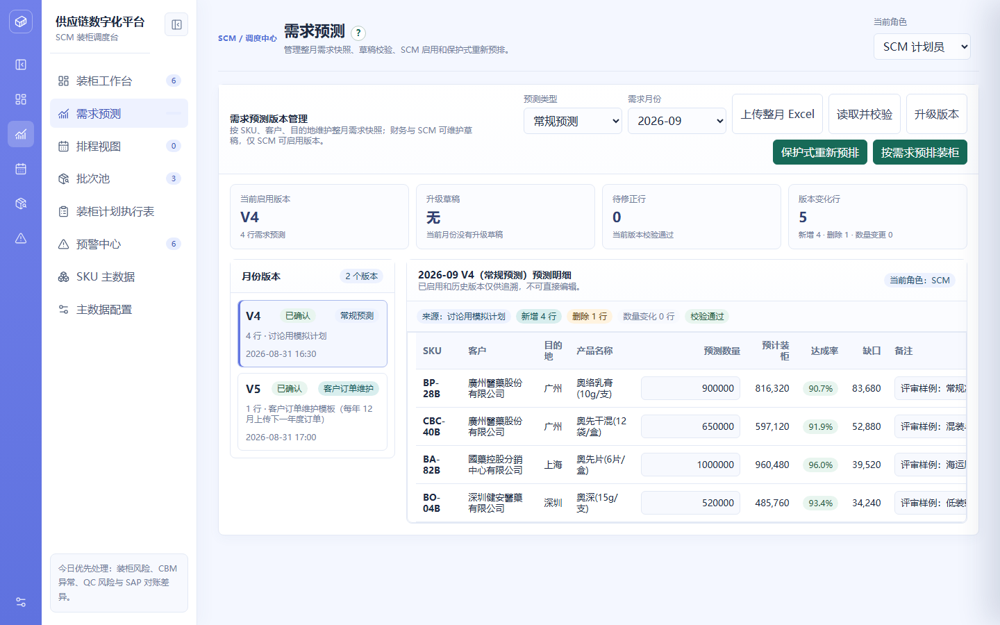

| 项目名称 | 供应链协同平台 | 模块 | 需求预测管理 |
|---|---|---|---|
| 需求名称 | 需求预测上传与版本维护 | 负责人 | SCM 产品线 |
| 文档版本 | V1.0 | 状态 | 已确认 |
| 更新日期 | 2026-09-08 | 关联原型 | supply-chain-prototype.html（需求预测页） |
| 版本 | 日期 | 变更说明 | 作者 |
|---|---|---|---|
| V1.0 | 2026-09-08 | 初版：预测双类型上传、矩阵模板解析、版本替换、数量 0 合法 | SCM 产品线 |
需求预测是排柜计划的源头。原流程中预测模板为「产品编码 × 月份列」矩阵，一次上传含 N 到 N+6 共 7 个月；预测分「常规预测」与「客户订单维护」两种类型，客户订单维护按订单下单预测，分类型上传维护。当前存在三点待收敛：预测数量需要支持 0（0 表示该产品本月不预排，便于用户自行管理）；已确认月份不得重复导入，未确认月份导入需以最新导入为准（清除旧草稿）；上传模板的月份列与类型需与系统版本模型对齐。
需求预测上传与版本维护的端到端流程见下方流程图（独立文件），关键分支为「已确认月份拒绝导入」「数量校验（负数阻断 / 0 合法）」「旧草稿清除替换」。
下图为现有系统「需求预测」页面的真实运行截图（供应链数字化平台）。

| 一级模块 | 二级功能 | 原型 | 描述 |
|---|---|---|---|
| 需求预测管理 | 预测上传 |
【页面元素】顶部为「预测类型」下拉（常规预测 / 客户订单维护）、「需求月份」下拉、文件选择框与「读取并校验」按钮；下方为版本列表卡片，展示版本号、月份、状态、类型、行数与更新时间。 【交互说明】切换预测类型 → 月份下拉按类型重载（常规预测 N~N+6 共 7 个月、客户订单维护当年 1-12 月）；选择文件后点「读取并校验」→ 解析模板并进入导入校验页。 【功能逻辑】预测类型决定读取的工作表：常规预测读「需求预测」sheet，客户订单维护读「客户订单」sheet；月份下拉由当前日期动态生成。 【数据与内容规则】模板首列为产品编码，列头为月份；客户与目的地按 SKU 从产品主数据带出。 |
|
| 导入校验与版本替换 |
【页面元素】顶部提示条说明替换结果；草稿预览表展示产品编码、产品名称、客户、目的地、预测数量与来源；底部「取消」「确认导入」按钮。 【交互说明】点「确认导入」→ 创建草稿版本并提示结果；点「取消」→ 返回列表页。 【功能逻辑】已确认月份：拒绝导入并提示走升级流程；未确认月份：删除该月该类型旧草稿，以本次导入为唯一草稿。 【边界说明】数量为负数 → 报错并阻止导入；数量为 0 或「-」→ 合法，标「不参与预排」；模板缺少所选月份列 → 回退长表格式并提示。 |
||
| 版本维护 |
【页面元素】明细表展示产品编码、产品名称、客户、目的地、可编辑的预测数量与备注；底部「返回」「保存草稿」「启用版本」按钮。 【交互说明】草稿数量可编辑；点「启用版本」→ 密码再认证 → 启用后旧已确认版本转旧版。 【功能逻辑】同一月份同一类型仅一个已确认版本；升级时生成 V+1 草稿并沿用基础版本数据。 【前置条件与权限】仅 SCM 可启用版本；启用需非空密码再认证。 |
||
| 数量 0 与预排关联 |
【功能逻辑】数量为 0 的 SKU 在明细中标注「预测为 0，不参与预排」；自动预排需求 = 常规预测 + 客户订单维护两类已确认版本按 SKU 合并，0 值不进入需求缺口。 【文案规范】「预测为 0，不参与预排」为统一提示文案。 |
| 场景 | 处理 |
|---|---|
| 已确认月份重复导入 | 拒绝导入，提示「该月该类型已存在已确认版本，不支持导入；如需变更请走升级流程」 |
| 数量为负数 | 校验报错，阻止创建草稿 |
| 模板缺少所选月份列 | 回退长表格式解析，并提示使用列头匹配失败 |
| SKU 主数据缺失 | 标记校验错误，无法带出客户 / 目的地，需先维护主数据 |
| 客户订单维护未到上传窗口 | 提示「每年 12 月可上传下一年度订单」 |
| 事件名 | 触发时机 | 关键属性 |
|---|---|---|
| forecast_upload | 点击「确认导入」 | 类型、月份、行数、来源文件 |
| forecast_version_activate | 点击「启用版本」 | 版本号、月份、类型 |
| forecast_import_blocked | 已确认月份导入被拒 | 月份、类型 |
| 阶段 | 内容 | 时间 |
|---|---|---|
| 一期 | 预测双类型上传、矩阵解析、版本替换、数量 0 合法 | 待确认 |
| 二期 | 版本对比、批量导入、预测达成率自动回写 | 待确认 |
| 术语 | 说明 |
|---|---|
| 预测类型 | 常规预测 / 客户订单维护 |
| 版本状态 | 草稿 / 已确认 / 旧版 |
| N~N+6 | 当月及其后 6 个月，共 7 个月 |
| ALT-T01 | 需求预测未上传预警（每月 5-10 日提醒） |